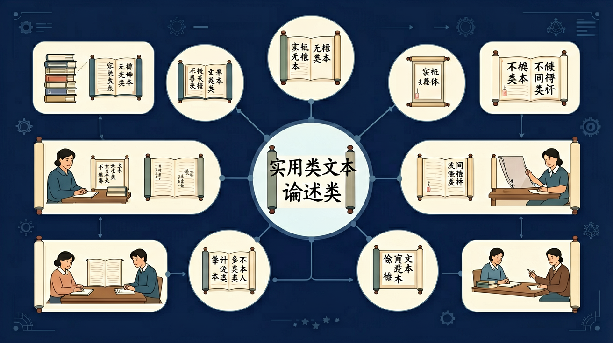

学习任务群的设计着眼于培养语言文字运用基础能力，充分顾及问题导向、跨文化、自主合作、个性化、创造性等因素，并关注语言文字运用的新现象和跨媒介运用的新特点。

🎯 能区分论述类与信息类文本的3个特征
🎯 能判断文本的核心论点及支撑论据
🎯 能分析文本结构并绘制信息流程图
❓ 论述类文本和信息类文本到底有啥区别？
❓ 为啥我总找不到文章的核心论点？
❓ 考试时怎么快速提取关键信息？
学完这一课，这些问题你都能自信地回答。
下列哪项是论述类文本的典型特征？
识别核心论点最有效的方法是？
实用类文本（论述类/信息类）是高中语文的重要内容。学习任务群的设计着眼于培养语言文字运用基础能力，充分顾及问题导向、跨文化、自主合作、个性化、创造性等因素，并关注语言文字运用的新现象和跨媒介运用的新特点。
学习任务群以自主、合作、探究性学习为主要学习方式，凸显学生学习语文的根本途径。这些学习任务群追求语言、知识、技能和思想情感、文化修养等多方面、多层次目标发展的综合效应。
论述类重论点、论据、论证；实用类重信息筛选、整合与理解。阅读要区分事实与观点，把握概念含义与论证逻辑，警惕绝对化表述与偷换概念。
论述文首尾与段首句常含观点；选择题用“比对原文”排除无中生有、曲解、绝对化。
常见误区：常见误区是凭常识做题，脱离材料。
论述类文本选择题最有效策略是？
你已经学过相关的前置知识，具备继续探索的底座；在日常生活中，你也早就接触过与「实用类文本（论述类/信息类）」相关的现象。
但当问题换了一个情境出现——需要你解释原因、做出判断或解决实际任务时，仅凭零散的旧知识就很容易卡住。
所以本课用一个贯穿的情境任务，带你把「实用类文本（论述类/信息类）」拆成可操作的步骤：先看懂它，再动手试，最后用练习和迁移把它变成自己的能力。
先标段落序号，再划关键句（观点句/结论句/过渡句）
用5W1H法还原作者意图（Who/What/When/Where/Why/How）
对比数据类信息与观点类信息的表述差异
用思维导图呈现论证逻辑链
将文本结构模板用于新闻/科普文写作
复制提示词到 AI 学伴，生成「实用类文本（论述类/信息类）」的思维导图或赏析提纲；也可以上传你手绘的示意图，请 AI 学伴点评。
复制后可粘贴到 AI 学伴继续对话。
以下关于垃圾分类的说法，正确的是？
设计一个实验，验证垃圾分类对环境保护的实际效果。
先独立作答，再点选项查看对错与错因。
以下哪种物品属于有害垃圾？
垃圾分类的主要目的是什么？
以下哪种物品不属于可回收物？
垃圾分类宣传手册中提到的四种基本分类是：可回收物、____、有害垃圾和其他垃圾。
答案：厨余垃圾
垃圾分类宣传手册中提到的四种基本分类是可回收物、厨余垃圾、有害垃圾和其他垃圾。
垃圾分类宣传手册中提到的常见误区之一是：____不属于可回收物。
答案：塑料袋
垃圾分类宣传手册中提到的常见误区之一是塑料袋不属于可回收物。
✅ 找反复出现的判断句
💡 混淆论据与论点
✅ 圈出'因此''然而'等逻辑提示词
💡 未关注逻辑衔接
口诀：一标二划三问法，结构论点一把抓
类比：像拆快递一样：先看外包装（结构），再验内容物（论点）
（高考题改编）对'垃圾分类效果评估报告'，最应关注？
分析科普文《AI医疗》时，首先要做？
将文本结构迁移到'直播带货利弊'写作中，关键步骤是？
点击节点跳转到对应章节；可切换布局。